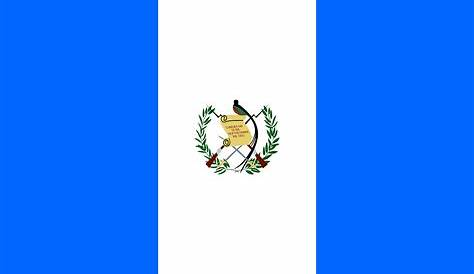

Lucia Robles
About Me
My name is Lucia Robles, I was born in Guatemala, and I am currently studying at BYU-Idaho. I am passionate about web development and design, and I enjoy learning new technologies. In my free time, I like to read books, watch movies, play video games, and spend time with my family and friends. I am excited to continue learning and growing in the field of web development, and I hope to use my skills to create innovative and impactful web applications.
Guatemala
Guatemala is located in Central America and is characterized by its abundant vegetation and tourist attractions, including volcanoes, lakes, Mayan ruins, and colonial cities. It has a population of 183 million. Its official language is Spanish, although it has linguistic varieties that historically derive from the proto-Mayan language. It is a country with a lot of culture and history, fauna and flora.